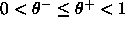
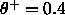
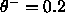

The implementation of the DDA-Algorithm always uses the Gaussian activation function Act_RBF_Gaussian in the hidden layer. All other activation and output functions are set to Act_Identity and Out_Identity, respectively.
The Learning function has to be set to RBF-DDA. No Initialization or Update functions are needed.
The algorithm takes three arguments that are set in the first three
fields of the LEARN row in the control panel. These are
 ,
,  (
(

) and the maximum number of RBF units to be diplayed in one row. This last item allows the user to control the appearance of the network on the screen and has no influence on the performance. Specifying 0.0 leads to the default values
,
and to a maximum number of 20 RBF units displayed in a row.Training of an RBF starts with either:
After having loaded a training pattern set, a learning-epoch can be started by pressing the ALL button in the control panel. At the beginning of each epoch, the weights between the hidden and the output layer are automatically set to zero. Note that the resulting RBF and the number of required learning epochs can vary slightly depending on the order of the training patterns. If you train using a single pattern (by pressing the SINGLE button) keep in mind that every training step increments the weight between the RBF unit of the correct class covering that pattern and its corresponding output unit. The end of the training is reached when the network structure does not change any more and the Mean Square Error (MSE) stays constant from one epoch to another.
The first desired value in an output pattern that is greater than 0.0 will be assumed to represent the class this pattern belongs to; only one output may be greater than 0.0. If there is no such output, training is still executed, but no new prototype for this pattern is commited. All existing prototypes are shrunk to avoid coverage of this pattern, however. This can be an easy way to define an ``error''--class without trying to model the class itself.